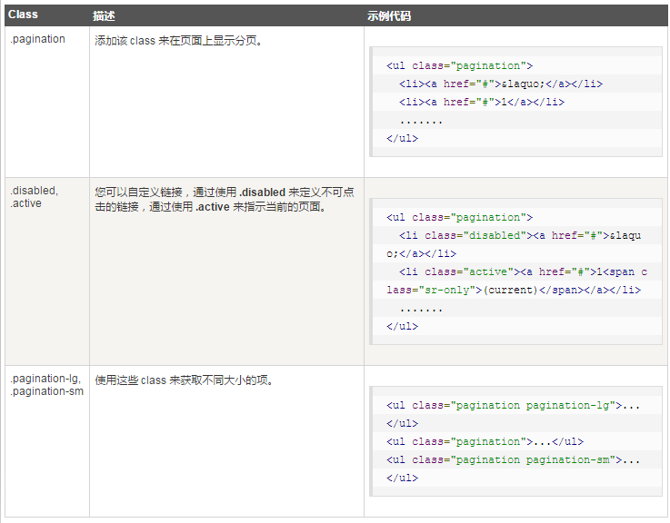
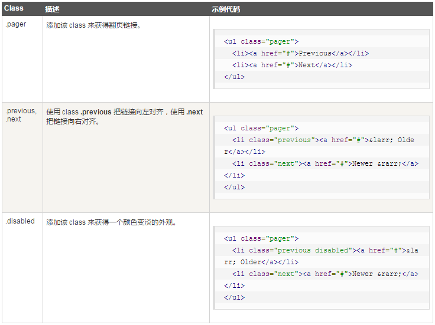

下表列出了 Bootstrap 提供的处理分页的 class。

下面的实例演示了上表中所讨论的 class .pagination 的用法：
下面的实例演示了上表中所讨论的 class .disabled、.active 的用法：
下面的实例演示了上表中所讨论的 class .pagination-* 的用法：
.pagination-lg
.pagination
.pagination-sm
如果您想要创建一个简单的分页链接为用户提供导航，可通过翻页来实现。与分页链接一样，翻页也是无序列表。默认情况下，链接是居中显示。
下表列出了 Bootstrap 处理翻页的 class。

下面的实例演示了上表中所讨论的 class .pager 的用法：
下面的实例演示了上表中所讨论的 class .previous、.next 的用法：
下面的实例演示了上表中所讨论的 class .disabled 的用法：